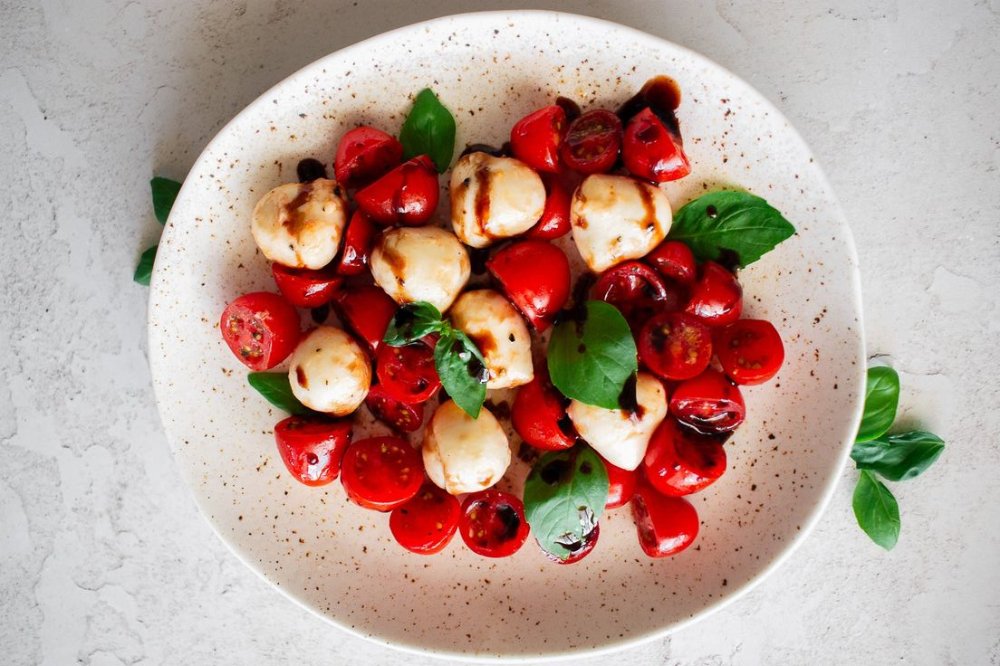

Back to Home

Caprese Salad with a Twist
Caprese Salad with a Twist is a vibrant, flavorful dish that elevates the classic
combination of juicy cherry tomatoes, creamy mozzarella, and fragrant basil.
The addition of a balsamic glaze adds a tangy-sweet note, perfectly balanced by a
drizzle of olive oil. Finished with a sprinkle of salt and pepper, this salad is a
refreshing side or light meal that’s as simple to prepare as it is delicious.
Prep Time: 10 min
Cook Time: None
Total Time: 10 min
5 Likes
Ingredients
- 1 cup cherry tomatoes, halved
- 1 ball of fresh mozzarella sliced or cubed (optional for vegetarians who eat dairy)
- Fresh basil leaves
- 1 tablespoon balsamic glaze
- 1 tablespoon olive oil
- Salt and pepper to taste
Preparation
- In a bowl, combine the tomatoes, mozzarella, and basil leaves.
- Drizzle with olive oil and balsamic glaze.
- Sprinkle with salt and pepper to taste.
- Toss lightly and serve as a side or a light meal.